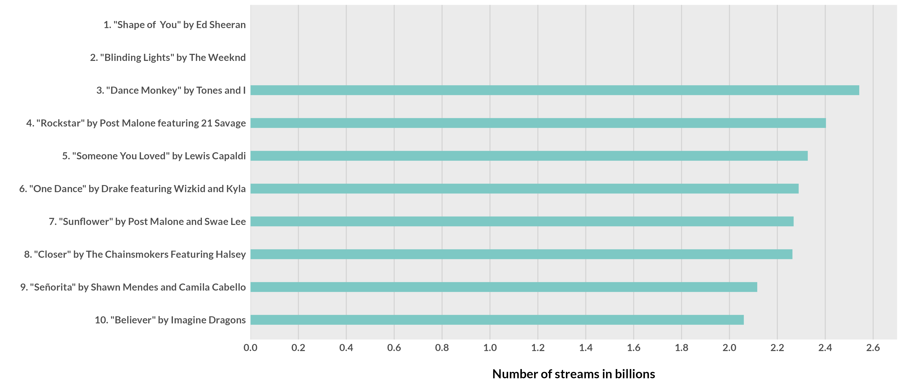
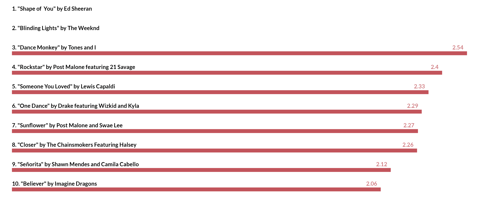

Credit

Andy Kirk put together Five Ways to present bar charts as part of his Five ways to... series back in 2019. The plots below are his original ideas, just recreated in ggplot2.
I originally recreated his plots in ggplot2 and published them as a gist and on Twitter in July 2019, stumbled upon it again recently, and thought why not capture it as a proper blog-post!
Additionally, when I originally made these remakes, ggplot2 required coord_flip() whereas the most recent version of ggplot2 allows you to natively create horizontal bar charts! I’ve thus changed a little bit of the code from the original gist to reflect the new options in ggplot2.
Again thank you to Andy Kirk for the prompt! Make sure to check out his blog in general for all sorts of great data viz tips.
Source Data
The data comes from Wikipedia, specifically a list of the most streamed songs on Spotify. We can scrape the table into R w/ rvest.
library(rvest)
library(tidyverse)Now that we have the libraries loaded, let’s read in the data, pull in the top 100, and add some new columns to use across our charts.
url <- "https://en.wikipedia.org/wiki/List_of_most-streamed_songs_on_Spotify"
df <- url %>%
read_html() %>%
html_table(fill = TRUE) %>%
.[[1]] %>%
set_names(nm = c("rank", "song_name", "artist", "album", "streams", "date_published")) %>%
slice(1:100) %>%
mutate(num_rank = parse_number(rank),
streams_comma = streams,
streams = parse_number(streams)/1000,
streams_text = if_else(
num_rank == 1,
paste(round(streams, digits = 2), "billion streams"),
as.character(round(streams, digits = 2))
),
lab_text = glue::glue("{rank}. {song_name} by {artist}"),
) %>%
as_tibble()
df %>% glimpse()
Rows: 100
Columns: 10
$ rank <chr> "1", "2", "3", "4", "5", "6", "7", "8", "9",…
$ song_name <chr> "\"Shape of You\"", "\"Rockstar\"", "\"One D…
$ artist <chr> "Ed Sheeran", "Post Malone featuring 21 Sava…
$ album <chr> "÷ (album)", "Beerbongs & Bentleys", "Views"…
$ streams <dbl> 2.594, 2.007, 1.909, 1.849, 1.829, 1.637, 1.…
$ date_published <chr> "6 January 2017", "15 September 2017", "5 Ap…
$ num_rank <dbl> 1, 2, 3, 4, 5, 6, 7, 8, 9, 10, 11, 12, 13, 1…
$ streams_comma <chr> "2,594", "2,007", "1,909", "1,849", "1,829",…
$ streams_text <chr> "2.59 billion streams", "2.01", "1.91", "1.8…
$ lab_text <glue> "1. \"Shape of You\" by Ed Sheeran", "2. \"…Data is ready to go!
Chart 1: Font-height bars
font_height_bars <- df %>%
filter(num_rank <=10) %>%
ggplot(aes(y = fct_reorder(lab_text, streams), x = streams)) +
geom_col(fill = "#7dc8c4", width = 0.3) +
theme(text = element_text(family = "Nunito Bold", face = "bold", size = 14),
axis.text = element_text(face = "bold"),
axis.ticks = element_blank(),
panel.grid.minor = element_blank(),
panel.grid.major.y = element_blank(),
panel.grid.major.x = element_line(color = "lightgrey")) +
labs(x = "\nNumber of streams in billions",
y = "") +
scale_x_continuous(limits = c(0,2.700), expand = c(0, 0),
breaks = scales::breaks_pretty(n = 10)
)
ggsave("font_height_bars.png", font_height_bars, dpi = 300,
height = 6, width = 14, units = "in")
Chart 2: Bars with invisible gridlines
invis_gridline <- df %>%
filter(num_rank <=10) %>%
ggplot(aes(x = streams, y = fct_reorder(lab_text, streams))) +
geom_col(fill = "#3686d3", width = .9) +
geom_vline(data = data.frame(x = seq(0, 2.6, .2)),
aes(xintercept = x), color = "white", size = 0.5) +
theme_minimal() +
theme(text = element_text(family = "Nunito Bold", face = "bold", size = 14),
axis.text = element_text(face = "bold"),
axis.ticks = element_blank(),
panel.grid = element_blank()) +
labs(x = "\nNumber of streams in billions",
y = "") +
scale_x_continuous(limits = c(0,2.7), expand = c(0, 0),
breaks = scales::breaks_pretty(n = 10))
ggsave("invis_gridline.png", invis_gridline, dpi = 300,
height = 6, width = 14, units = "in")
Chart 3: Direct labels
direct_label <- df %>%
filter(num_rank <=10) %>%
ggplot(aes(x = streams, y = fct_reorder(lab_text, streams))) +
geom_col(fill = "#303844", width = .9) +
geom_text(aes(y = fct_reorder(lab_text, streams), x = streams, label = streams_text),
color = "white", hjust = 1, fontface = "bold", position = position_nudge(x = -.020)) +
theme_minimal() +
theme(text = element_text(family = "Nunito Bold", face = "bold", size = 16),
axis.text = element_text(face = "bold"),
axis.text.x = element_blank(),
axis.ticks = element_blank(),
panel.grid = element_blank()) +
labs(y = "",
x = "") +
scale_x_continuous(limits = c(0,2.7), expand = c(0, 0),
breaks = scales::breaks_pretty(n = 10))
ggsave("direct_label.png", direct_label, dpi = 300,
height = 6, width = 14, units = "in")
Chart 4: Labels above
label_above <- df %>%
filter(num_rank <=10) %>%
ggplot(aes(x = streams, y = fct_reorder(lab_text, streams))) +
geom_col(fill = "#c2545b", width = .2) +
geom_text(aes(x = 0, y = fct_reorder(lab_text, streams), label = lab_text),
color = "black", hjust = 0, position = position_nudge(y = 0.3),
fontface = "bold", family = "Nunito Bold", size = 4) +
geom_text(aes(x = streams, y = fct_reorder(lab_text, streams), label = streams_text),
color = "#cf7a7f", hjust = 1, position = position_nudge(x = -.02, y = 0.3),
fontface = "bold", family = "Nunito Bold", size = 4) +
theme_minimal() +
theme(text = element_text(family = "Nunito Bold", face = "bold", size = 14),
axis.text = element_blank(),
axis.text.x = element_blank(),
axis.ticks = element_blank(),
panel.grid = element_blank()) +
labs(y = "",
x = "") +
scale_x_continuous(limits = c(0,2.7), expand = c(0, 0),
breaks = scales::breaks_pretty(n = 10))
ggsave("label_above.png", label_above, dpi = 300,
height = 6, width = 14, units = "in")
Chart 5: Lollipop
lollipop_bar <- df %>%
filter(num_rank <=10) %>%
ggplot(aes(x = streams, y = fct_reorder(lab_text, streams))) +
geom_col(fill = "grey", width = .8) +
geom_point(shape = 21, fill = "orange", color = "black", size = 20, stroke = 1) +
geom_text(aes(x = streams, y = fct_reorder(lab_text, streams), label = streams),
color = "black", hjust = 0.5,
fontface = "bold") +
theme_minimal() +
theme(text = element_text(family = "Nunito Bold", face = "bold", size = 14),
axis.text = element_text(face = "bold"),
axis.text.x = element_blank(),
axis.ticks = element_blank(),
panel.grid = element_blank(),
axis.title.x = element_text(hjust = 0)) +
labs(y = "",
x = "Number of streams in billions") +
scale_x_continuous(limits = c(0,2.7), expand = c(0, 0),
breaks = scales::breaks_pretty(n = 10)) +
NULL
ggsave("lollipop_bar.png", lollipop_bar, dpi = 300,
height = 8, width = 16, units = "in")